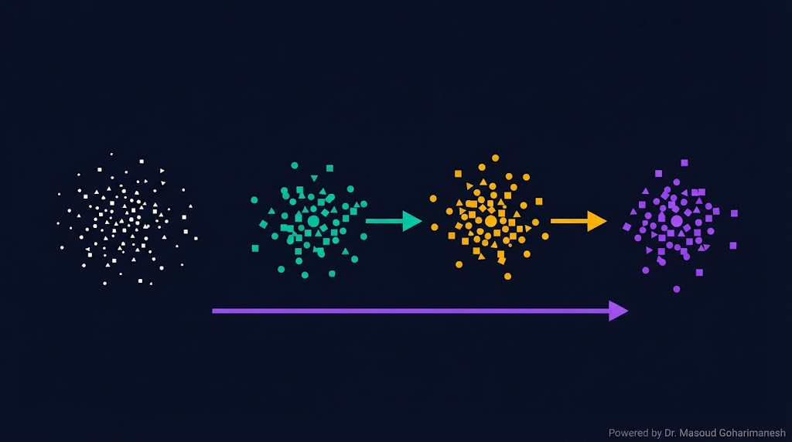
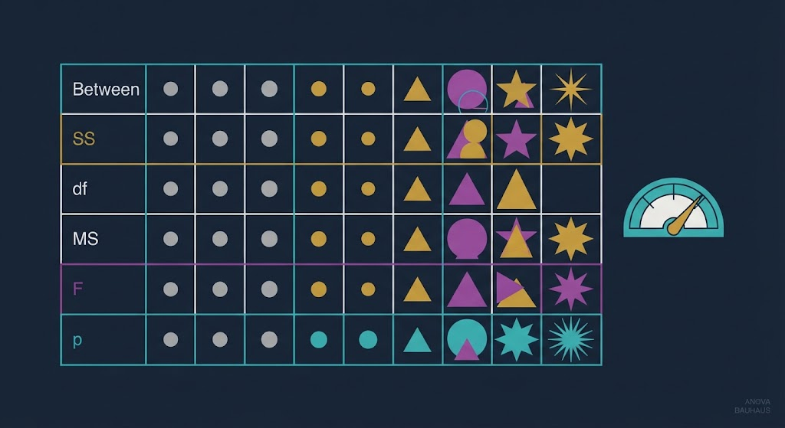
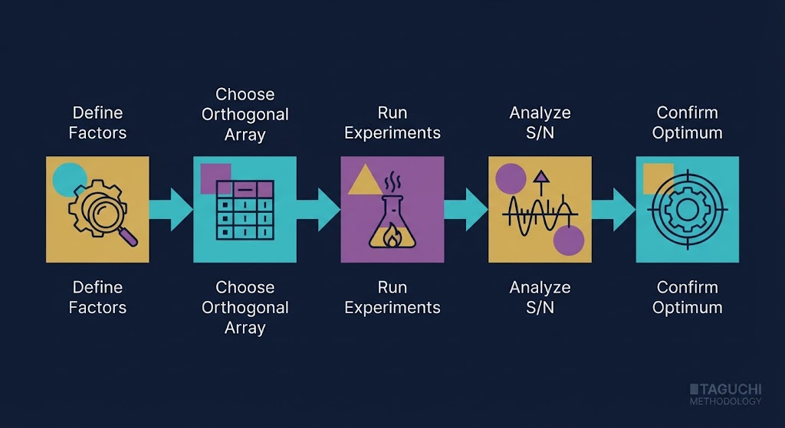
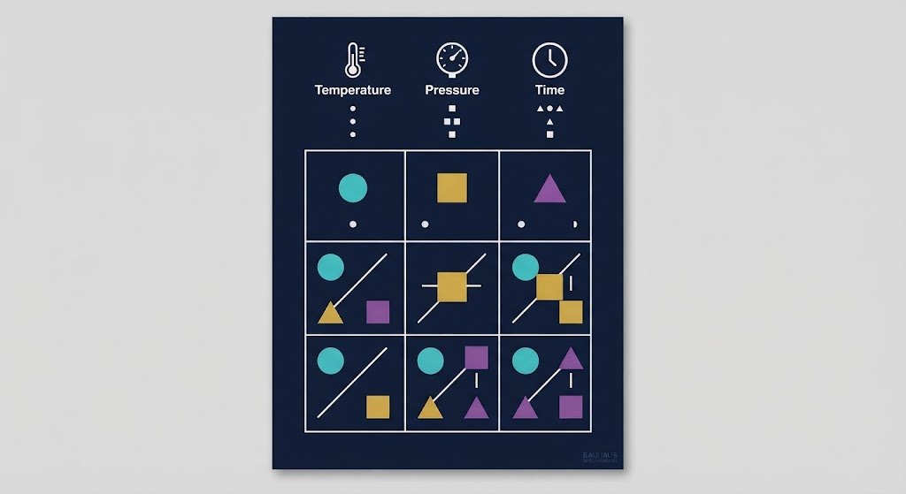
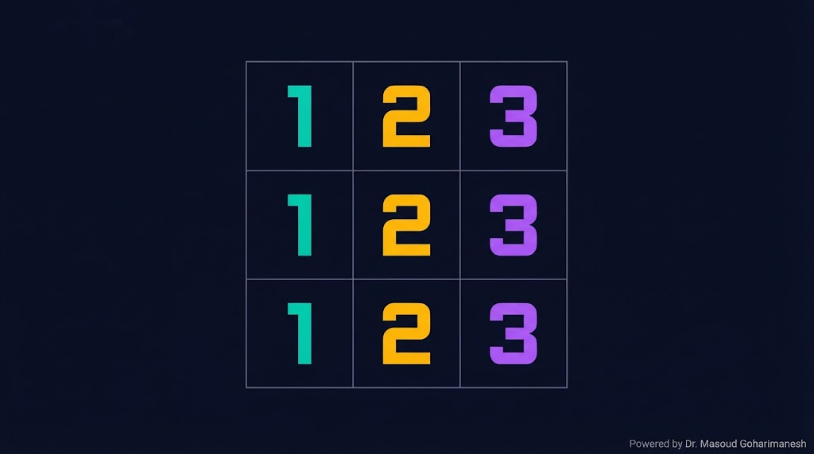
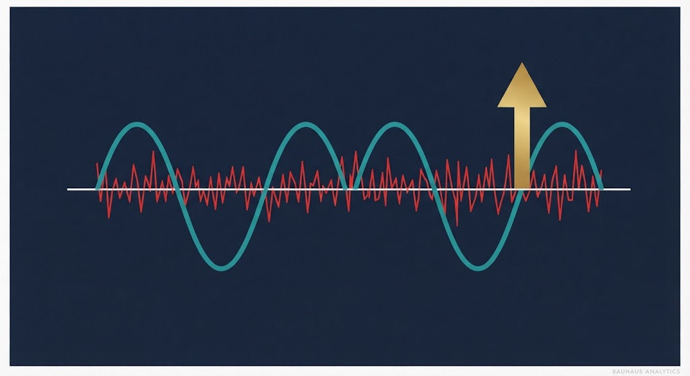

جلسه ۷ — ANOVA و Taguchi
جلسه ۷ — ANOVA و Taguchi
جلسه ۷ — ANOVA و Taguchi
جلسه ۷ — ANOVA و Taguchi
Analysis of Variance · Design of Experiments · Taguchi Method
From Statistical Analysis to Robust Optimization
Decision Tree، Random Forest، Ensemble، Vox Populi
ANOVA، طراحی آزمایش، تاگوچی
✅ تحلیل واریانس (ANOVA)
✅ مفهوم F-test و p-value
✅ Design of Experiments (DOE)
✅ آرایههای متعامد تاگوچی
✅ نسبت Signal-to-Noise (S/N)
✅ کاربرد در بهینهسازی مکانیکی
فرض کنید میخواهید یک قطعه مکانیکی بسازید و ۳ پارامتر دارید: دما، فشار، و زمان. هر کدام ۳ سطح دارند. اگر بخواهید همه ترکیبها را آزمایش کنید، ۳×۳×۳ = ۲۷ آزمایش لازم است — پرهزینه و زمانبر.
ANOVA به شما میگوید کدام پارامتر واقعاً اثر معنیدار دارد. و روش تاگوچی با یک آرایه متعامد، فقط با ۹ آزمایش همان اطلاعات را میدهد. این یعنی ۳ برابر صرفهجویی در زمان و هزینه.
تحلیل واریانس — کدام عامل واقعاً مؤثر است؟
آرایه متعامد — با کمترین آزمایش، بهترین نتیجه
نسبت سیگنال به نویز — معیار مقاومسازی
طراحی مقاوم — مقاوم به تغییرات محیطی
ANOVA (Analysis of Variance) میسنجد آیا میانگین دو یا چند گروه، واقعاً با هم تفاوت دارند یا این تفاوت ناشی از شانس است.

چقدر میانگینها از هم دورند — اثر متغیرها
چقدر دادههای هر گروه پراکندهاند — نویز
تفسیر F: اگر $F$ بزرگ باشد (بیشتر از مقدار بحرانی)، یعنی میانگینها واقعاً متفاوتاند. اگر نزدیک ۱ باشد، یعنی تفاوتها فقط نویز است.

تفاوت معنیدار است — اثر عامل واقعی
تفاوت معنیدار نیست — ناشی از نویز
میانگین و پراکندگی هر گروه را تنظیم کنید و F و p را ببینید.
DOE هنر برنامهریزی آزمایشهایی است که بیشترین اطلاعات را با کمترین تعداد آزمایش بدهد.

همه ترکیبها — دقیق ولی پرهزینه
فقط بخشی از ترکیبها — با اطلاعات کامل
تصادفی — کنترل متغیرهای مزاحم
دکتر گنایچی تاگوچی (ژاپنی) روشی ابداع کرد که با آن، محصولات را در برابر نویز (تغییرات محیطی، خطای تولید) مقاوم کنیم — حتی اگر نتوانیم نویز را کنترل کنیم.

پیدا کردن بهترین ترکیب سطوح
متغیرهای خارجی که کنترل نمیکنیم
محصولی که در هر شرایطی خوب کار کند
یک آرایه متعامد مثل $L_9(3^4)$ یعنی: ۹ آزمایش، ۴ عامل، ۳ سطح. جادوی این آرایه در این است که همه سطوح، بهطور متعادل توزیع شدهاند.

این آرایه بهگونهای طراحی شده که هر جفت سطح از هر دو عامل، دقیقاً یک بار در جدول ظاهر شود — ویژگی متعادل بودن.
یک عامل را انتخاب کنید و ببینید چطور آرایه L9 توزیع میشود.
در روش تاگوچی، هدف بیشینهسازی نسبت S/N است — یعنی سیگنال (اثر مطلوب) نسبت به نویز (اثر نامطلوب) بزرگتر باشد.

نوع مسئله و پراکندگی نویز را تغییر دهید و S/N را ببینید.

عوامل کنترلپذیر و سطوح
انتخاب L8، L9، L18 و…
اندازهگیری y برای هر ترکیب
محاسبه S/N و ANOVA
آزمون تأییدی با سطوح بهینه
| ویژگی | فاکتوریل کامل | Taguchi |
|---|---|---|
| تعداد آزمایش | $3^k$ | ۹ (L9) |
| اطلاعات | کامل | کامل (برای اثرهای اصلی) |
| هزینه | بالا | پایین |
| پیچیدگی تحلیل | بالا | ساده |
| مقاومسازی | محدود | عالی (S/N) |
سناریو: بهینهسازی نرخ برادهبرداری (MRR) در تراشکاری فولاد.
۳ سطح: ۱۰۰، ۱۵۰، ۲۰۰ m/min
۳ سطح: ۰.۱، ۰.۲، ۰.۳ mm/rev
۳ سطح: ۰.۵، ۱، ۱.۵ mm
با روش تاگوچی L9، فقط با ۹ آزمایش میتوان بهترین ترکیب را پیدا کرد — در حالی که فاکتوریل کامل به ۲۷ آزمایش نیاز داشت.
% ANOVA یکطرفه group1 = randn(20,1) * 1 + 5; group2 = randn(20,1) * 1 + 10; group3 = randn(20,1) * 1 + 15; data = [group1; group2; group3]; group = [ones(20,1); 2*ones(20,1); 3*ones(20,1)]; [p, tbl, stats] = anova1(data, group); fprintf('p-value: %.4f\n', p); % Taguchi — آرایه L9 L9 = [1 1 1; 1 2 2; 1 3 3; 2 1 2; 2 2 3; 2 3 1; 3 1 3; 3 2 1; 3 3 2]; % شبیهسازی نتایج y = rand(9,1) * 10 + 50; % S/N برای «بزرگتر بهتر» SN = -10 * log10(mean(1./y.^2)); disp(['S/N mean: ', num2str(mean(SN))]);
import numpy as np from scipy import stats # ANOVA یکطرفه np.random.seed(42) g1 = np.random.randn(20) + 5 g2 = np.random.randn(20) + 10 g3 = np.random.randn(20) + 15 F, p = stats.f_oneway(g1, g2, g3) print(f"F = {F:.3f}, p = {p:.4f}") # Taguchi — آرایه L9 L9 = np.array([ [1, 1, 1], [1, 2, 2], [1, 3, 3], [2, 1, 2], [2, 2, 3], [2, 3, 1], [3, 1, 3], [3, 2, 1], [3, 3, 2], ]) # شبیهسازی نتایج y = np.random.rand(9) * 10 + 50 # S/N برای «بزرگتر بهتر» SN = -10 * np.log10(np.mean(1 / y**2)) print(f"S/N mean: {SN:.2f} dB")
[AI] HW07 - نام - شماره دانشجویی به arcslab.uth@gmail.com
برای جستوجوی مقالات و مراجع درباره Taguchi و ANOVA.
جستوجوی علمی با ذکر منابع
جلسه ۷ — اصلیتحلیل کد و مقالات
پشتیبانکدنویسی Taguchi
پیشنهادیدر Perplexity جستوجو کنید: «Taguchi method optimization machining 2024» و ۳ مقاله معتبر پیدا کنید. منابع را در HW07 بنویسید.
مقایسه میانگین چند گروه، F-test، p-value
طراحی آزمایش برای بهینهسازی
آرایه متعامد، کاهش آزمایش از ۲۷ به ۹
سه نوع: Larger، Smaller، Nominal
مقاومسازی در برابر نویز
• Support Vector Machines
• Kernel Trick
• Cross-Validation
• Confusion Matrix، Precision، Recall
• ROC Curve و AUC
• کاربرد در مکانیک
۱. HW07 را در Google Drive آپلود کنید
۲. کتاب Géron فصل ۳ و ۵ را مرور کنید
۳. با Claude درباره «SVM» بحث کنید
Next Session: SVM & Model Evaluation